Inicio › Aires acondicionados
Aires acondicionados: precios en Honduras y dónde comprar más barato
55 productos de 6 tiendas, con el precio de cada una. Actualizado el 14 de noviembre de 2026.
Aires acondicionados FrigidaireAires acondicionados LGAires acondicionados MabeAires acondicionados JVCAires acondicionados TeknoAires acondicionados Aux
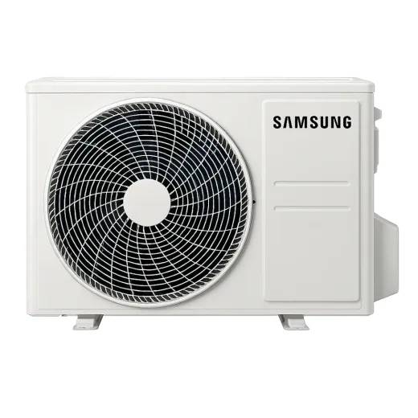
Aire acondicionado Samsung · 18,000 BTU · Inverter · MinisplitL 16,990En 2 tiendas · más barato en Diunsa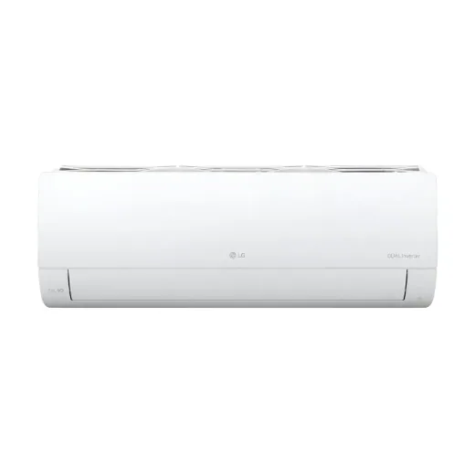
Aire acondicionado LG · 12,000 BTU · Inverter · MinisplitL 12,997En La Curacao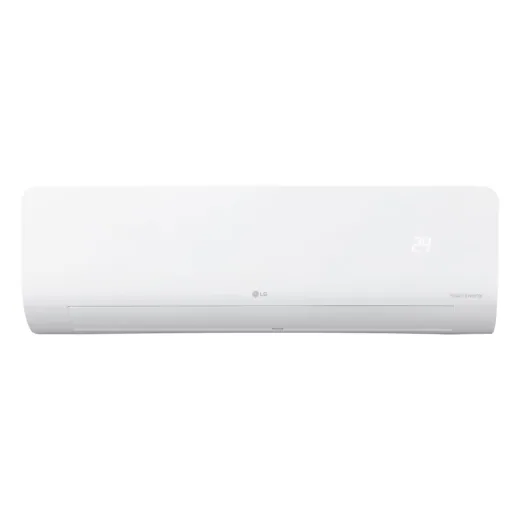
Aire acondicionado LG · 12,000 BTU · Inverter · MinisplitL 14,990En Diunsa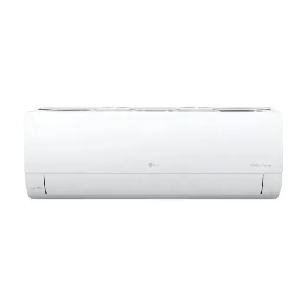
Aire acondicionado LG · 12,000 BTU · Inverter · MinisplitL 11,999En Lady Lee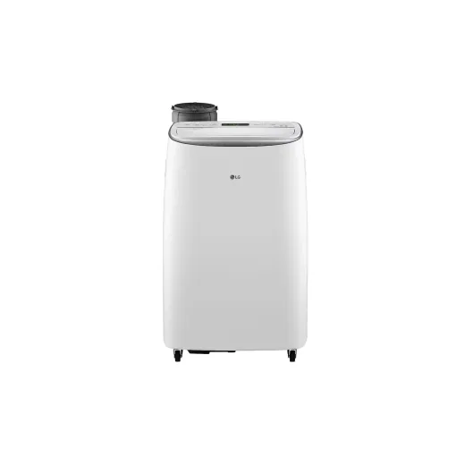
Aire acondicionado LG · 14,000 BTU · PortátilL 16,999En Lady Lee Aire acondicionado Frigidaire · 12,000 BTU · PortátilL 10,990En 3 tiendas · más barato en Diunsa
Aire acondicionado Frigidaire · 12,000 BTU · PortátilL 10,990En 3 tiendas · más barato en Diunsa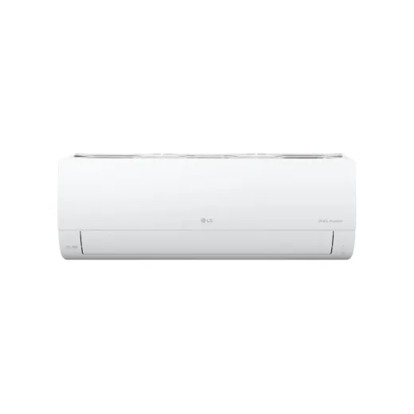
Aire acondicionado LG · 18,000 BTU · Inverter · MinisplitL 18,999En Lady Lee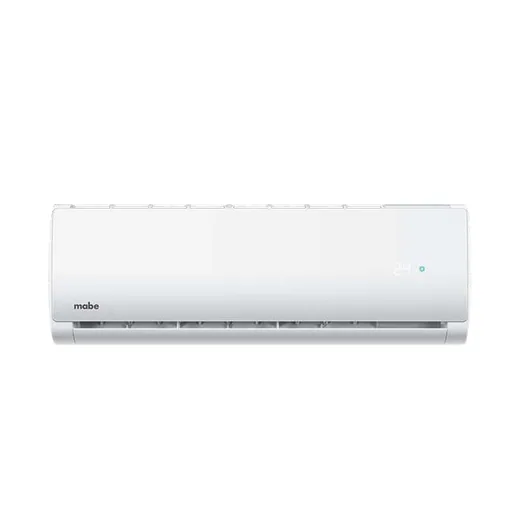
Aire acondicionado Mabe · 18,000 BTU · Convencional · MinisplitL 12,690En 2 tiendas · más barato en Diunsa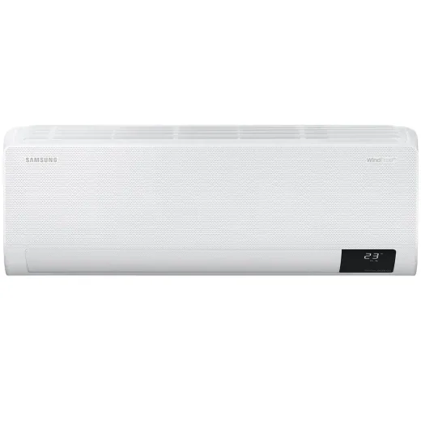
Aire acondicionado Samsung · 12,000 BTU · MinisplitL 13,495En Gallo más Gallo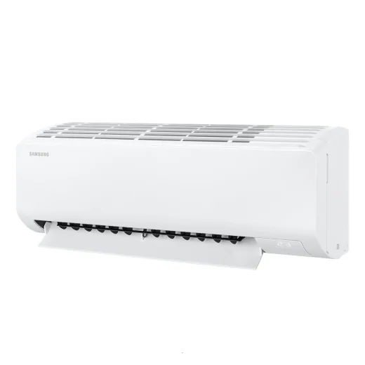
Aire acondicionado Samsung · 12,000 BTU · MinisplitL 15,990En Diunsa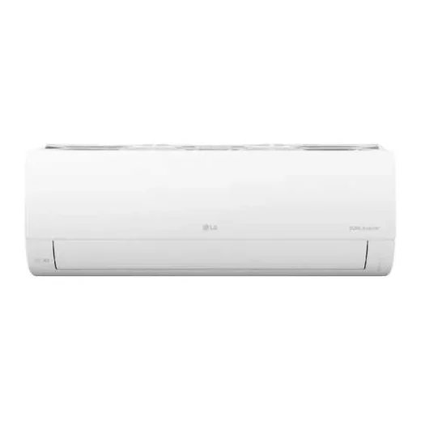
Aire Acondicionado LG Dual Cool Invert 2L 24,690En Diunsa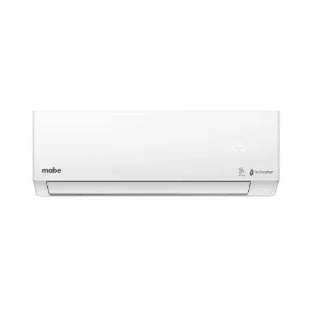
Aire acondicionado Mabe · 18,000 BTU · MinisplitL 15,997En La Curacao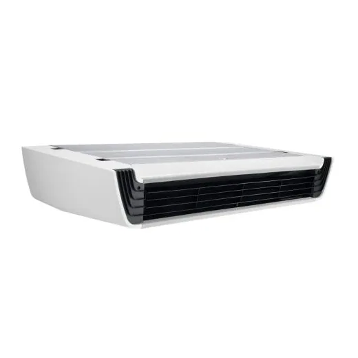
Aire Tipo Techo Suspendido 3 TonL 53,999.01En Lady Lee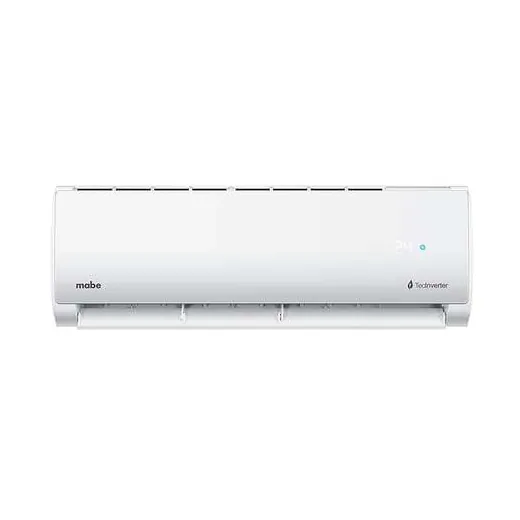
Aire acondicionado Mabe · 12,000 BTU · Inverter · MinisplitL 10,490En Diunsa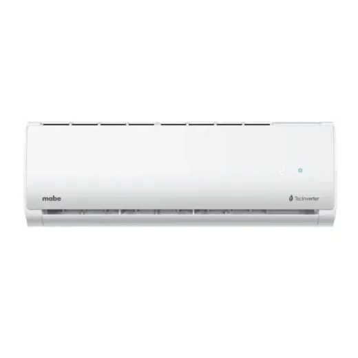
Aire acondicionado Mabe · 12,000 BTU · MinisplitL 9,997En La Curacao Aire acondicionado Frigidaire · 18,000 BTU · Inverter · MinisplitL 13,490En Diunsa
Aire acondicionado Frigidaire · 18,000 BTU · Inverter · MinisplitL 13,490En Diunsa Aire acondicionado Frigidaire · 17,000 BTU · MinisplitL 14,190En Diunsa
Aire acondicionado Frigidaire · 17,000 BTU · MinisplitL 14,190En Diunsa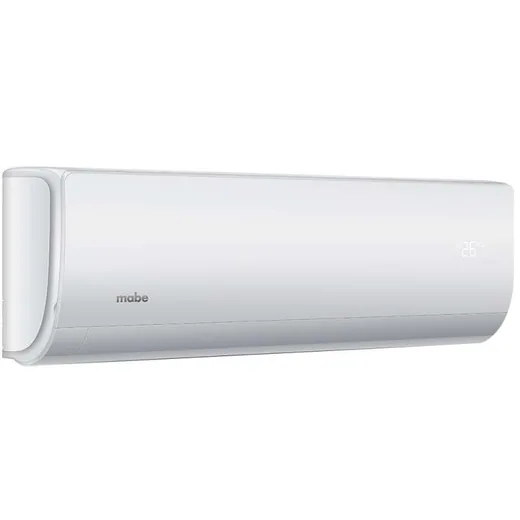
Aire acondicionado Mabe · 12,000 BTU · Convencional · MinisplitL 7,890En Diunsa Aire acondicionado Frigidaire · 12,000 BTU · Inverter · MinisplitL 10,999.01En Lady Lee
Aire acondicionado Frigidaire · 12,000 BTU · Inverter · MinisplitL 10,999.01En Lady Lee Aire acondicionado Frigidaire · 12,000 BTU · MinisplitL 10,997En La Curacao
Aire acondicionado Frigidaire · 12,000 BTU · MinisplitL 10,997En La Curacao Aire acondicionado Frigidaire · 22,000 BTU · MinisplitL 17,990En Diunsa
Aire acondicionado Frigidaire · 22,000 BTU · MinisplitL 17,990En Diunsa Aire acondicionado Frigidaire · 22,000 BTU · Inverter · MinisplitL 19,999En Lady Lee
Aire acondicionado Frigidaire · 22,000 BTU · Inverter · MinisplitL 19,999En Lady Lee Aire acondicionado Frigidaire · 22,000 BTU · Inverter · MinisplitL 20,999En Lady Lee
Aire acondicionado Frigidaire · 22,000 BTU · Inverter · MinisplitL 20,999En Lady Lee Aire acondicionado Frigidaire · 22,500 BTU · MinisplitL 26,995En Gallo más Gallo
Aire acondicionado Frigidaire · 22,500 BTU · MinisplitL 26,995En Gallo más Gallo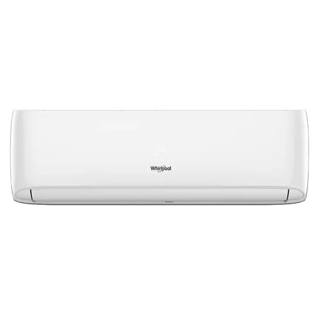
Aire acondicionado Whirlpool · 11,000 BTU · Inverter · MinisplitL 8,990En 2 tiendas · más barato en Diunsa- Aire acondicionado Oster · 18,000 BTU · Convencional · MinisplitL 13,590En Diunsa
 Aire acondicionado JVC · 18,000 BTU · Inverter · MinisplitL 13,990En Diunsa
Aire acondicionado JVC · 18,000 BTU · Inverter · MinisplitL 13,990En Diunsa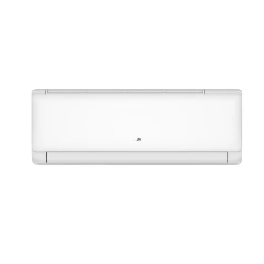
Aire acondicionado Aux · 18,000 BTU · Inverter · MinisplitL 13,999En Lady Lee- Aire acondicionado JVC · 18,000 BTU · Convencional · MinisplitL 12,990En Diunsa
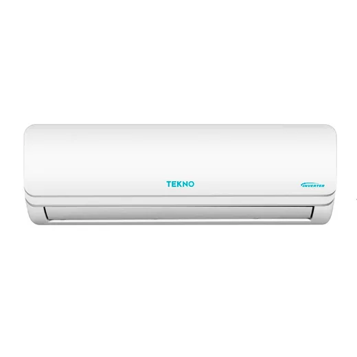
Aire acondicionado Tekno · 18,000 BTU · Inverter · MinisplitL 12,990En Diunsa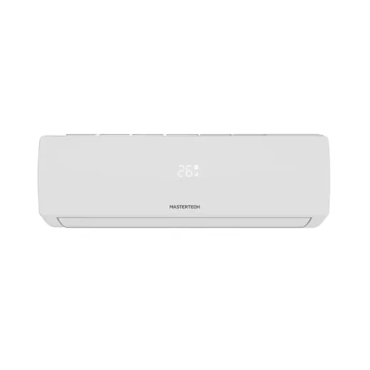
Aire Acondicionado Mastertech Frío 18 °C MTM18I1JW26L 14,997En La Curacao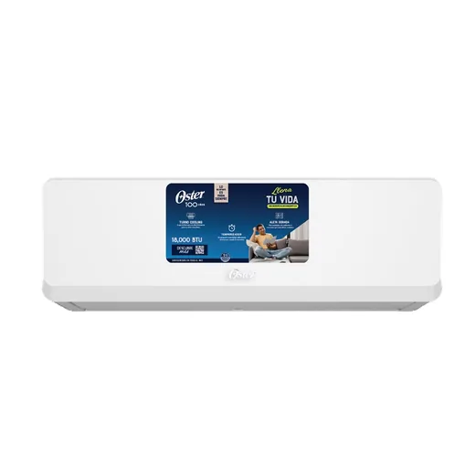
Aire acondicionado Oster · 18,000 BTU · MinisplitL 11,990En Diunsa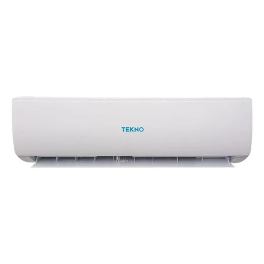
Aire acondicionado Tekno · 18,000 BTU · Inverter · MinisplitL 11,990En Diunsa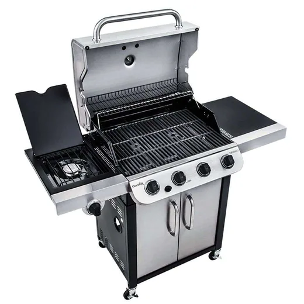
Aire acondicionado Char-Broil · 36,000 BTU · MinisplitL 15,490En Diunsa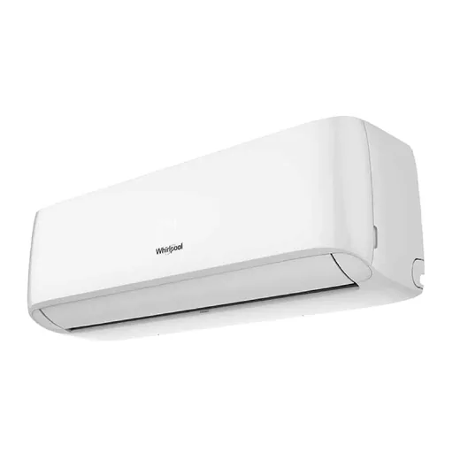
Aire acondicionado Whirlpool · 11,000 BTU · Inverter · MinisplitL 11,490En Diunsa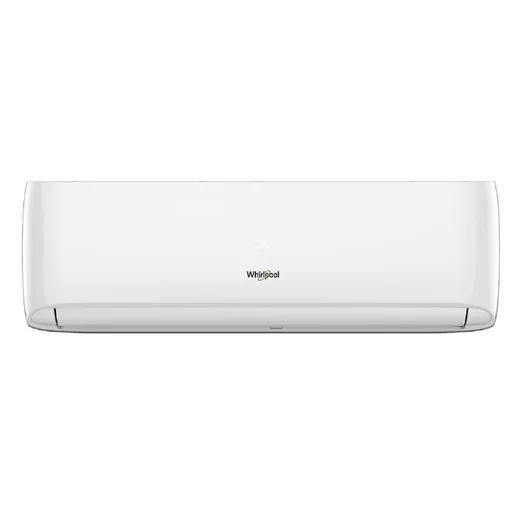
Aire acondicionado Whirlpool · 17,000 BTU · Inverter · MinisplitL 15,990En Diunsa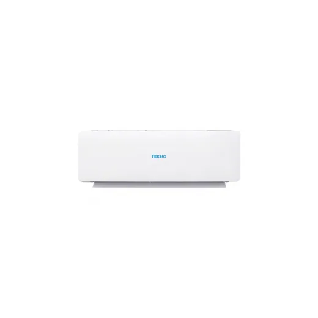
Aire acondicionado Tekno · 18,000 BTU · Convencional · MinisplitL 10,990En Diunsa Aire acondicionado JVC · 24,000 BTU · Convencional · MinisplitL 16,990En Diunsa
Aire acondicionado JVC · 24,000 BTU · Convencional · MinisplitL 16,990En Diunsa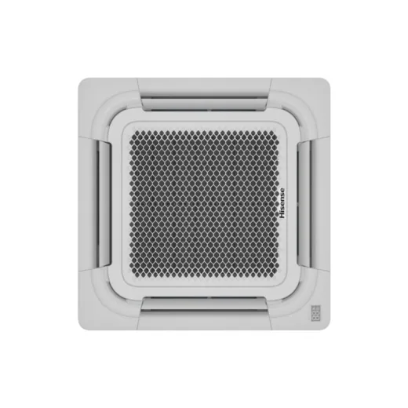
Aire Tipo Cassette Inverter 3 TonL 37,999En Lady Lee Aire Acondicionado Mastertech Frío 18 °C MTM12I1JW26L 9,997En La Curacao
Aire Acondicionado Mastertech Frío 18 °C MTM12I1JW26L 9,997En La Curacao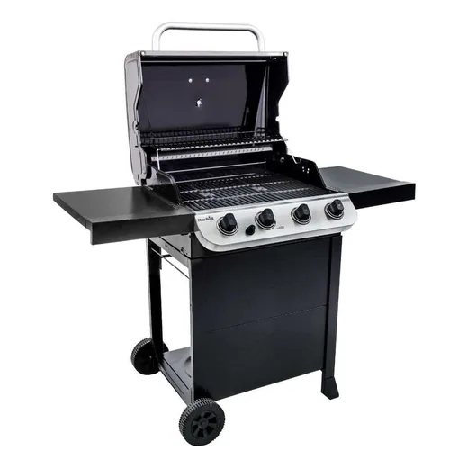
Aire acondicionado Char-Broil · 36,000 BTU · MinisplitL 9,990En Diunsa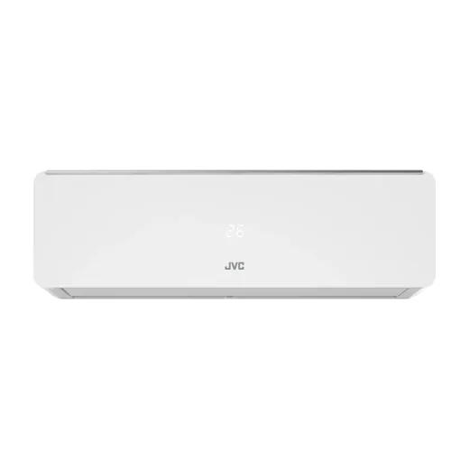
Aire acondicionado JVC · 24,000 BTU · Inverter · MinisplitL 18,990En Diunsa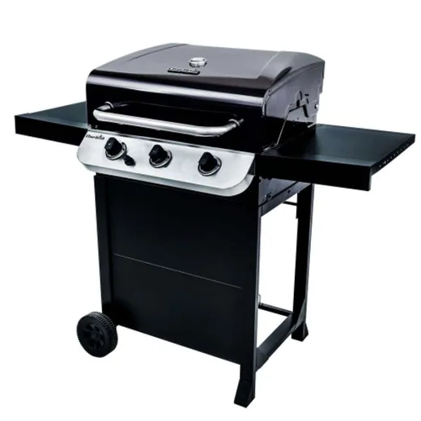
Aire acondicionado Char-Broil · 36,000 BTU · MinisplitL 9,490En Diunsa Aire acondicionado Aux · 12,000 BTU · Inverter · MinisplitL 8,999En Lady Lee
Aire acondicionado Aux · 12,000 BTU · Inverter · MinisplitL 8,999En Lady Lee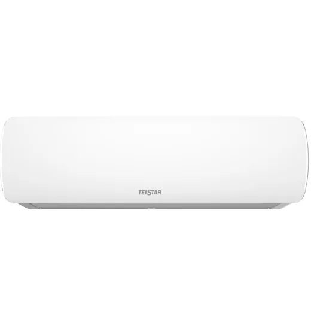
Aire acondicionado Telstar · 12,000 BTU · MinisplitL 8,995En Gallo más Gallo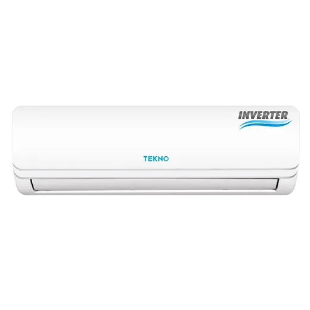
Aire acondicionado Tekno · 12,000 BTU · Inverter · MinisplitL 7,990En Diunsa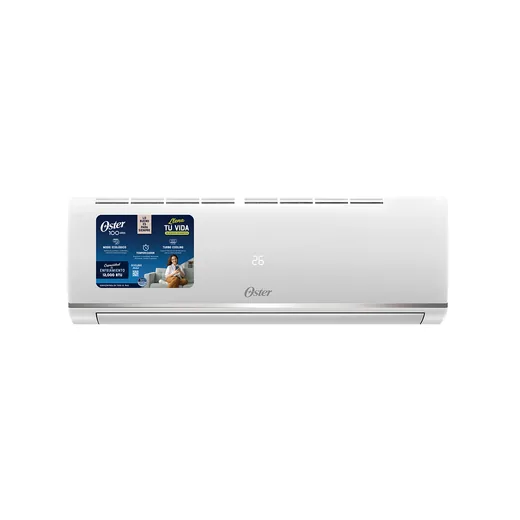
Aire acondicionado Oster · 12,000 BTU · Convencional · MinisplitL 7,490En Diunsa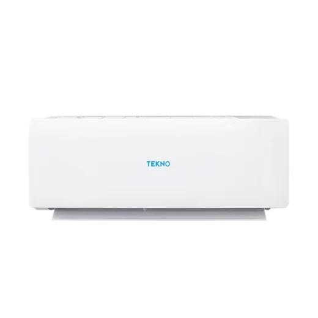
Aire acondicionado Tekno · 12,000 BTU · Convencional · MinisplitL 7,490En Diunsa Aire acondicionado JVC · 12,000 BTU · Convencional · MinisplitL 6,990En Diunsa
Aire acondicionado JVC · 12,000 BTU · Convencional · MinisplitL 6,990En Diunsa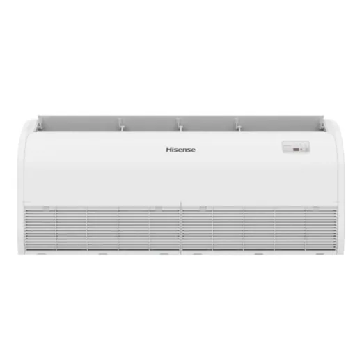
Aire Tipo Piso/Techo Inverter 5 TonL 58,999En Lady Lee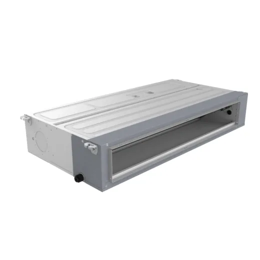
Aire acondicionado Aux · 36,000 BTU · Inverter · Tipo ductoL 29,999En Lady Lee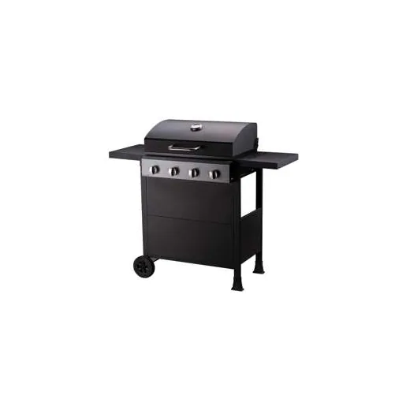
Aire acondicionado Grill Superchef · 9,000 BTU · MinisplitL 3,990En Diunsa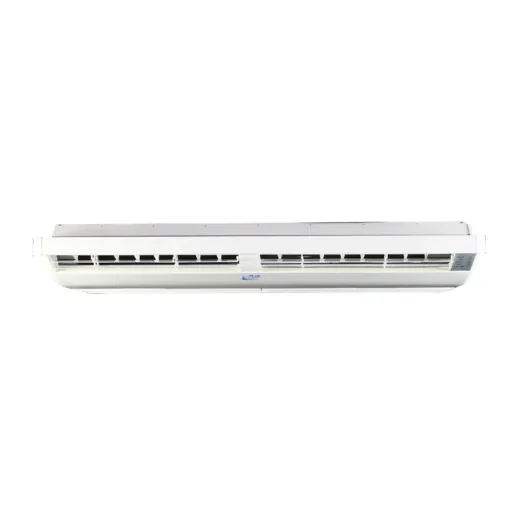
Aire Acondicionado 60k Piso-Techo 220v Gplus 60000PT2L 49,590En Acosa Aire acondicionado Aux · 60,000 BTU · Inverter · Tipo ductoL 62,999En Lady Lee
Aire acondicionado Aux · 60,000 BTU · Inverter · Tipo ductoL 62,999En Lady Lee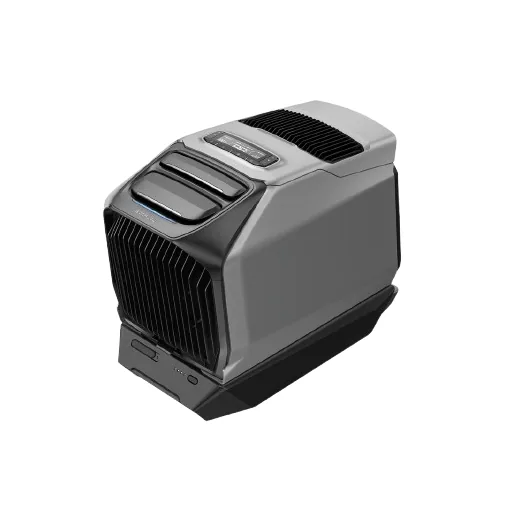
Estacion Portatil -a/C Ecoflow/Wave 3L 64,990En Diunsa
Preguntas frecuentes
¿Dónde están más baratos los aires acondicionados en Honduras?
Entre los 2 aires acondicionados que se venden en 2 o más tiendas, Diunsa tuvo el precio más bajo en 2 (100%), según los precios del 14 de noviembre de 2026. Depende del producto: revisa la tabla de cada uno.
¿Cuánto cuestan los aires acondicionados en Honduras?
Desde L 3,990. Comparamos 55 productos de 6 tiendas.
¿Qué tiendas comparan?
Diunsa, Elektra, La Curacao, Lady Lee, Gallo más Gallo, Acosa.